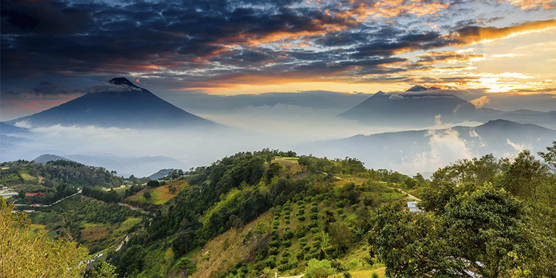
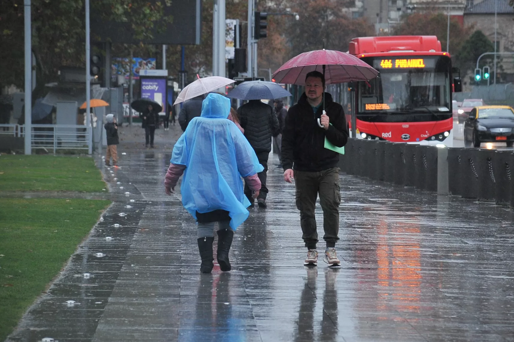

Clima en Guatemala
El clima de Guatemala se origina a partir de los fenómenos que se generan por efecto de la circulación
general de la atmósfera, la influencia oceánica, y este va adquiriendo características particulares por
la posición geográfica y la topografía del país.

La época lluviosa
por lo general da inicio en el mes de mayo, en el mes de junio suelen presentarse días nublados y
lluviosos. En julio y parte de agosto se produce un período seco denominado canícula, esto debido a la
inversión de los alisios, y al fortalecimiento del anticiclón del Golfo de México, posteriormente al
debilitarse y desaparecer vuelve nuevamente las precipitaciones intensas que completan la temporada
lluviosa (septiembre y octubre).

La época seca
da inicio con el incremento de la presión atmosférica y la migración de masas de aire frio proveniente de
la zona polar (Frentes fríos), causando un descenso de la temperatura e incrementando la velocidad del
viento, por lo general se tiene predominancia de viento norte, esta época fría se marca de noviembre a
febrero, y posteriormente, se incrementa la temperatura presentándose olas de calor en los meses de
marzo y abril. Durante esta época se pueden presentar algunas lluvias locales de tipo convectivo, o
prefrontales por la influencia de frentes fríos.